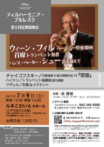

フィルハーモニア・ブルレスケ
東日本大震災により、お亡くなりになられた方々に深い哀悼の意をささげるとともに、 被災された地域の皆さまに対し、心よりお見舞いを申し上げます。 チケット残りわずか！お早めに！！ トランペット奏者 ハンス・ペーター・シュー氏 出演※チケットをご希望の方は、お名前、ご住所、希望枚数とホームページをみた旨を 以下の【お問い合わせ】までご連絡下さい。
【お問い合わせ】
広報：大室千穂（おおむろ・ちほ）
E-Mail： chiho_kappa@hotmail.com
Mobile-Phone：090-9309-0141
2011シーズンのプログラムは、当団シェフの得意とするフランスもの、メインにチャイコフスキーの後期交響曲の名曲
「悲愴」を取り上げます。
そして、トランペット奏者のハンス・ペーター・シュー氏をお招きし、
ハイドンのトランペット協奏曲を演奏します。
2011年7月9日(土) 14時開演(13時半開場)
於：ルネこだいら（小平市民文化会館）大ホール
チャイコフスキー／ 交響曲第6番「悲愴」
ハイドン／ トランペット協奏曲 ※
ラヴェル／ 古風なメヌエット
※トランペット独奏：ハンス・ペーター・シュー
指揮：東貴樹
入場料：全席自由1000円

新着情報
- Topページを更新しました。(2011.6.6)
- チケット販売を開始しました。(2011.5.11)
- 練習日程,次回演奏会情報などを更新しました。(2011.2.23)
- 練習日程を更新しました。(2011.1.12)
- アーカイブを更新しました。(2011.1.2)
- 練習日程を更新しました。(2011.1.2)
- Topページを更新しました。(2011.1.2)
管理人：加嶋稔（かしま・みのる）
E-Mail： minorukashima@jcom.home.ne.jp
このホームページは、クラシック音楽情報センター(http://www.musicinfo.com) より、サーバーの無償使用の提供を受けています